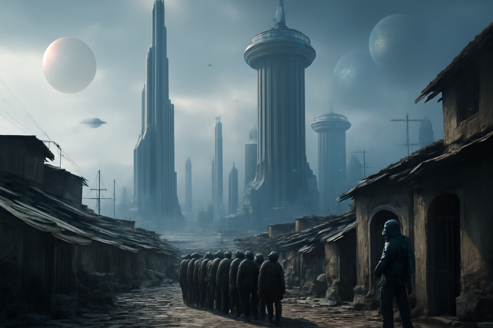
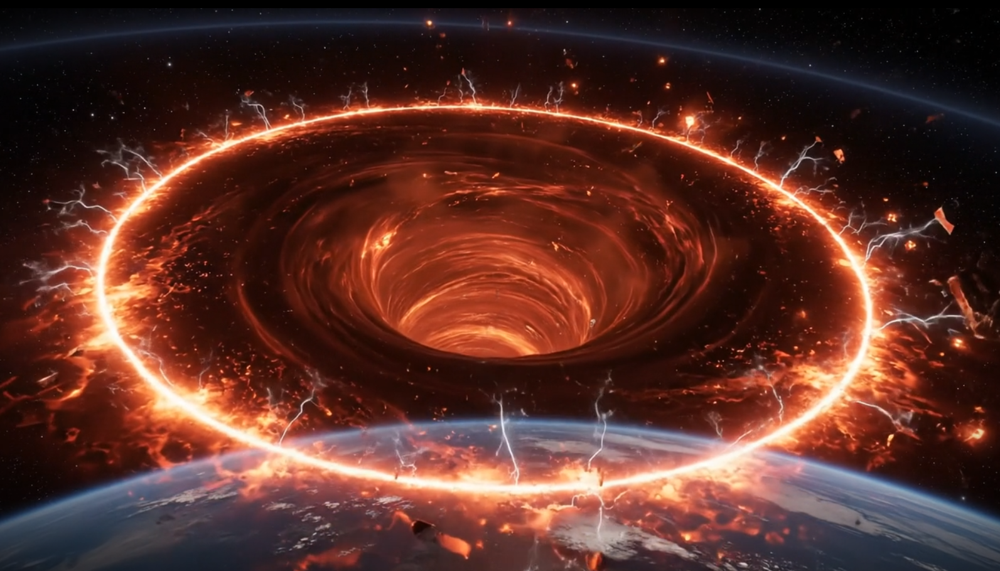
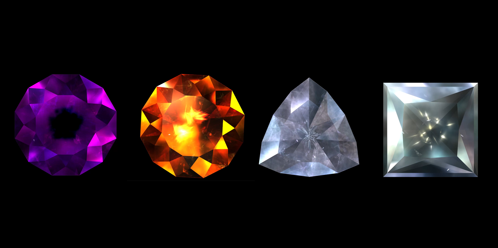
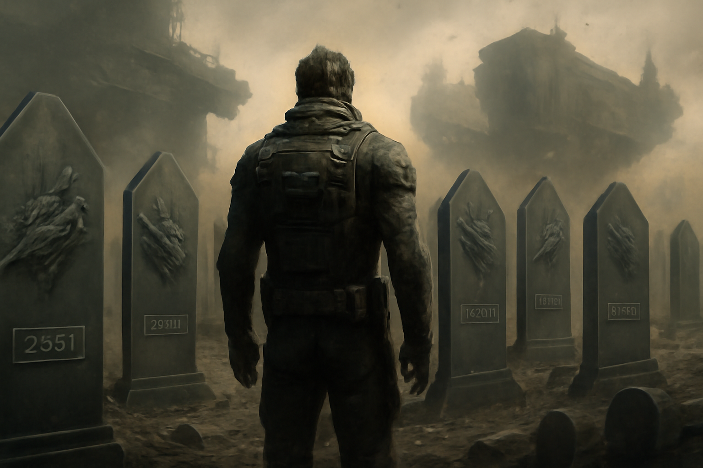
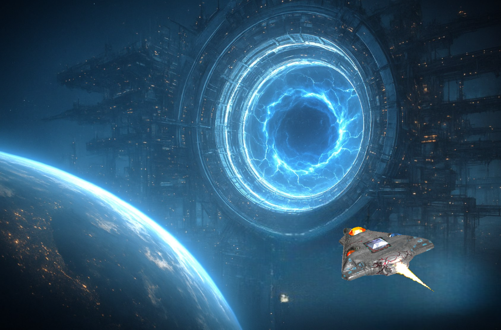

Earth, Year 4420 — cradle of life, tomb of hope

Sky towers pierce the choking haze — sealed palaces for the few who rule from above.
Below, billions scrape by in ration lines and cracked slums, forced to look up — tortured daily by the sight of a life of luxury they’ll never taste.
Some fled: Mars’s furnace cities, Venus’s storm citadels, Mercury’s mines, even outlaw colonies drifting beyond Neptune’s edge. But out there, the same power brokers guard the warmth, the water, the light — and they guard it mercilessly.
The Breach

When even advances in nuclear fusion couldn’t satisfy the elites’ endless greed, they forced the universe open in the pursuit of more.
They split spacetime with photon convergence — forging the first portal, a wound that births a temporary dimension, sustained only by a conscious mind observing it.
The breach gave back one miracle: Gemstone Alpha — a flawless, perfect-cut gem with fire flickering endlessly at its core. When triggered, it doesn’t just fuel reactors — it births pure flame from nothing, an eternal spark hoarded by the elite to tighten their grip on everyone below.
No drone ever returned. No AI survives the passage. Only life — only conscious minds — can steady the fracture long enough to steal from it.
Some whisper these stones echo ancient myths — relics of forgotten civilizations that once shaped worlds with shards of creation.
The Gemstones

Dimension Stones — the universe’s ultimate prize.
Each one is pure power: fuel for cores, warmth for cities, water for wastelands, food for barren soil.
One could terraform Mars, thaw Europa, seed green in vacuum — and set the masses free.
After Gemstone Alpha, the elites and their corporate hounds tore open fracture after fracture. Seven more stones were dragged back — each paid for in blood. They should have fed the hungry and shattered the chains below.
Instead, they vanished into vaults — hoarded to keep the palaces burning bright while billions stayed in the dark.
Every breach births a realm of extremes — firestorms, frozen voids, crystalline mazes — each unique, never to be repeated.
Step through the swirling haze and the dimension throws its worst first: swarms of crystalline attack ships, storms of blades and lightning. Survive that, and you face the guardian — a towering mechanical beast with the stone socketed deep in its heart.
Some say these guardians aren’t just machines — but watchers, testing intruders for reasons no one understands.
The Cost

First, the Elite sent their best: highly decorated crews with iron nerves. But the breach devours pride and training alike.
For every fifty crews that cross, one returns — and only if they succeed. You either rescue a stone — or you never leave.
When the trained died and the flow slowed to a trickle, they turned to the desperate: criminals, outcasts, the reckless driven by greed. But the breach didn’t care. Most never returned — and the rest learned not to try.
Now they have ships. They have tech. But they have no one left willing to cross.
Behind the scenes, factions within the Prosperity Group and hidden dynasties war for control — each stone means power, and the power to hoard more.
The Captain

You were never meant for this — until you chose it.
A highly decorated Captain — trusted to carry secrets between stars while palaces rose above lines of the forgotten.
You gave your life to your career — years lost in deep space and black contracts. In the end, it cost you everything real. Your wife stopped waiting and chose a lord behind the tower walls — a life of warmth you’d never share. She took your son with her, sealing him in a world you’d never see again.
You lost having something to live for long ago. But here, at the edge of the breach, you’ve found something worth dying for.
When the last crews failed and the stones stopped flowing, you made your stand.
You volunteered — on one condition: If you somehow survive, every stone you drag back goes to the people who sleep under plastic tarps while the palaces hoard the dawn.
They agreed — not from mercy, but because your ship’s sensors and your crew’s eyes are their last chance to map the breach — data for their future plans and runs to capture more stones and feed their obscene wealth.
Bound for the Breach
Your ship — The Shardchaser — is a coffin stitched from wrecks, socketed with smaller stones to power weapons, shields, and spells.
Your crews:
First Officer
Keeps your mind whole when the dimension claws at your sanity.
Tactical Officer
The blade between survival and oblivion.
Weapons Officer
Scarred from old wars, ready when the breach bares its teeth.
Science Officer
Master of atmospheres, anomalies, and reading the breach’s twisted moods.
Dr. Arimus Larth, Chief Gemologist
Vanished inside a fracture for four years and returned certain the stones don’t just wait — they choose.
A Great Sacrifice

Each run begins the same: the breach flares open. Through its haze, you glimpse the dimension’s core — fire, ice, thunder — a temporary realm built to test and destroy those who dare to cross.
You prepare to step through, knowing it exists only while you observe it — and ends the moment you tear its heart out.
One Dimension Stone at a time — warmth for the freezing, fusion power to light cities, water for those that haven’t tasted it in a century. Enough stones could drag billions out from under the boots of the palaces — and ignite a light of hope fierce enough to break the chains that keep them trapped in darkness.
GEM FIGHTER: FRACTURED ORIGINS.
Risk the breach. Bring hope to billions. Find something worth dying for